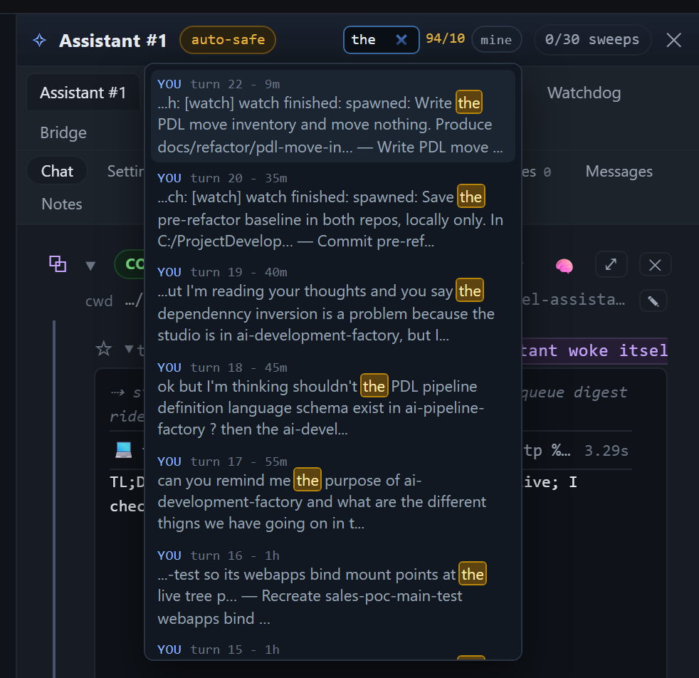

The assistant's header search: one box, one store read, and the counts it prints
agent-worktree-gui/.worktrees/add-a-search-bar-to-the-assistant-panel-c46646, branch
wtgui/add-a-search-bar-to-the-assistant-panel-c46646, version 1.89.4. Every number below came out of
npm run verify:assistant-search against a sandbox panel booted from this checkout, or out of the two
new test files.
The short version
A search box now sits in the title row's empty gap, between the auto-safe chip and the
0/30 sweeps pill, with a count and a mine toggle. It does not filter the DOM: it asks a
new server read, GET /api/assistant/search, over the persisted turns, so it reaches every turn the
store kept rather than the five the card draws. A hit loads the page that turn lives on, through the same
wtTurnFold.reveal the card's pager uses, and marks the match inside the turn.
The row did not grow: 36.94 px with the box and 36.94 px with the box set to
display:none, measured in the same page.
Where a turn's text actually lives, and what the search queries
A turn in the assistant panel is a job record. The fields the search reads are on that record, in the panel's job
store (~/.wag/state/jobs.json), and they are read through the same two functions the rest of the
assistant already reads them with:
| Field | Where it is stored | Read by |
|---|---|---|
| the reader's prompt ("his input") | prompt on the job record |
Jobs.list() and Jobs.get() in lib/jobs.js, through
Assistant.searchTurns() in lib/assistant.js |
| the assistant's reply | finalMessage on the record (the run's last word; the card's
completion.final.text is the same text after the summary pass) |
|
| a tool / console line | lines[], one {kind, text, lid, at} per line, searched line by line with
text and the line's own kind carried on the hit |
That is the whole reason the box could not be a page filter: conversations() hands the card five
turns (wtTurnFold.PER_PAGE) whose consoles hold a tail (60 lines), while the store holds every turn it
kept (80 jobs in the store this was proved against, 22 of them Assistant #1's). The search module is
lib/assistant/search.js; the adapter is routes/assistant-search.js, mounted in
server.js beside the queue and digest prefixes and shaped like routes/assistant-queue.js
(a factory taking the Assistant plus the transport's sendJson, one exact path, its own 405).
The query's meaning, once, for both sides
The matcher is public/core/turn-search.js: a classic script public/index.html loads
before assistant.js, and an ES module lib/assistant/search.js imports. One implementation,
so a hit cannot mean one thing in the count and another in the mark.
| Query | Means |
|---|---|
sweeps pill | a plain substring, case-insensitively: no wildcard, no pattern |
public*js | * is any run of characters, including none |
t?rn | ? is exactly one character |
[, ., (, $ | literals, because every regex metacharacter is escaped before the pattern is compiled |
The escaping, proved where it used to throw
Compiling the raw query is what made a bracketed search a 500: a bare [ is an
Unterminated character class, and a raw . matches anything. The test file
test/turn-search.test.js queries [ and . against text that holds neither
and asserts zero, with no exception, then asserts the same two characters are found where
the text does hold them. test/assistant-search.test.js repeats the zero case through the search
engine and through the route. In the live panel, [ answered
29 matched and the page raised no error.
Scope, the cap, and the two numbers
The route takes q, scope, limit and an optional assistantId.
scope defaults to all (prompt, reply and every console line); the box's mine
toggle sends input, which searches only what the reader typed. limit defaults to 20 and is
capped at 50.
When the cap bites, the answer keeps the reader's own input first, then the replies, then the console lines,
newest first inside each class. The answer always carries matched beside displayed, and
the box prints them as matched/displayed beside the box (amber when they differ), so the list can never
look complete when it is not.
The proof, in a real panel
The sandbox is booted from this checkout with a copy of the reader's own job store, Assistant #1 selected on its Chat pane. The card first draws five turns; the phrase below lives on the oldest turn the store keeps for that assistant (22 turns, five pages), so the page provably does not hold it.
| Typed into the box | The panel's count | What it shows |
|---|---|---|
watch: [watch] watch finished: spawned: Resume |
1/1 | a phrase from the oldest turn, several pages back: one hit, the reader's input; the click loaded
77f99872's page and marked the whole phrase inside the turn, brackets and all |
watch:*Resume |
1/1 | the same turn through * as a wildcard, typed as plain text |
the |
94/10 | the cap biting: 94 matched, 10 displayed, the first rows all "you" (his input kept first), and the count's tooltip says so |
[ |
29 matched | a literal bracket, no exception, no error in the page console |

Assistant #1 - auto-safe - the search box with
the, 94/10 and mine - 0/30 sweeps - close. Under it, the
results: one row per hit, each with where it came from, its turn's ordinal and a one-line window with the match
marked.The row, measured
display:noneposition: fixed under the box, so a result can never add a line to the rowWhat was run
| Command | Answer |
|---|---|
node --test test/turn-search.test.js test/assistant-search.test.js |
24 tests, 24 pass (8 matcher, 16 search + route) |
npm run verify:assistant-search |
20/20 checks, screenshot written |
npm run test:changed | 168 files, 1504 tests, 1490 pass,
14 fail: the same 14 fail on origin/main exported with
git archive, name for name |
npm test | 2694 tests, 2676 pass,
18 fail: the same 18 fail on origin/main across the same 13 files, and
the two sorted lists of names are identical |
npm run absolute-paths | clean: no new absolute path in any tracked file |
Files
public/core/turn-search.js (new; loaded by public/index.html, imported by the server module)lib/assistant/search.js (new: the three fields, the cap's preference, matched vs displayed)lib/assistant.js, method searchTurns() (the thread set for one assistant, the store read)routes/assistant-search.js (new) mounted in server.jspublic/index.html, public/style.css, and the search block in public/assistant.jstest/turn-search.test.js, test/assistant-search.test.js (new)tools/verify-assistant-search.mjs (new), npm run verify:assistant-search